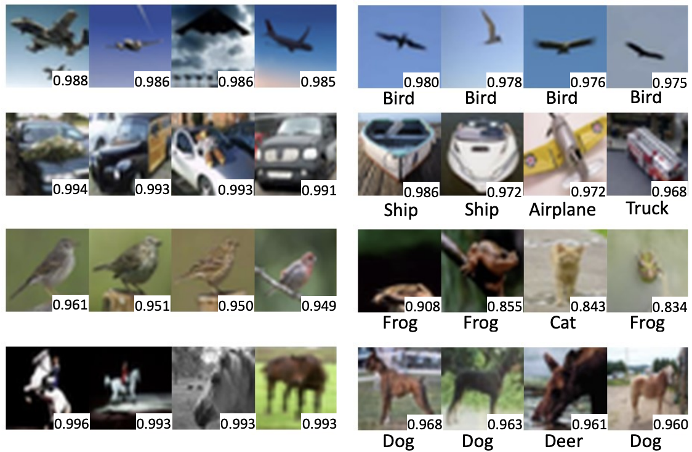
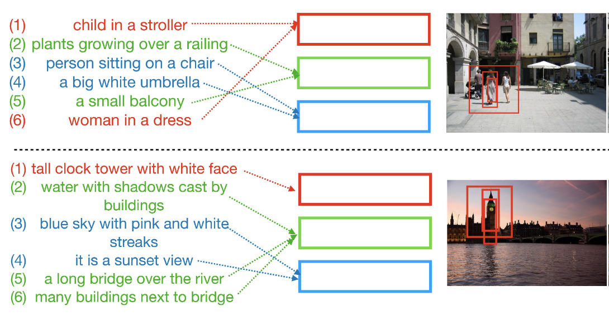
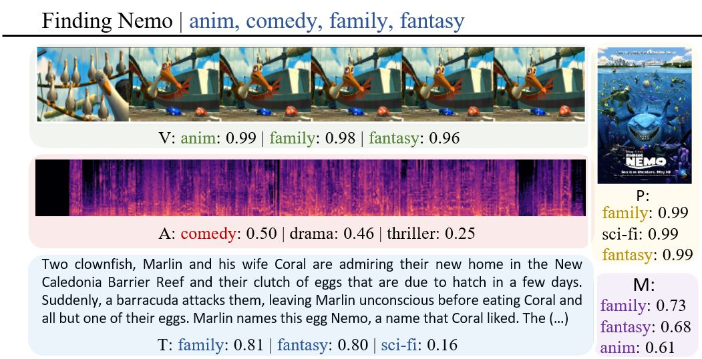
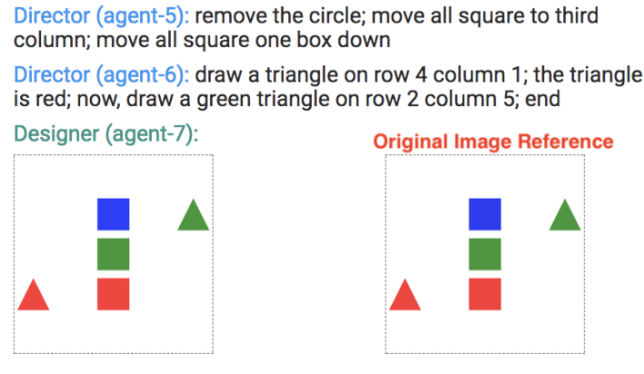
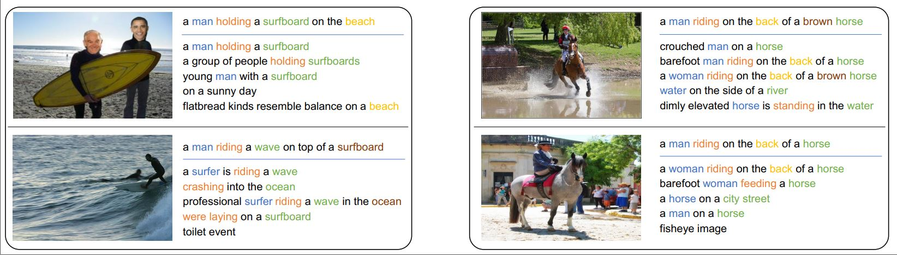

I am a Ph.D. student in Computer Science at the University of Virginia advised by Prof. Vicente Ordóñez Román, working on computer vision and language. I received my B.S. in Engineering at the Tecnológico de Costa Rica. Previously I spent 10 years working as a Software Engineer at different Tech Companies.
|  | Curriculum Labeling: Self-paced Pseudo-Labeling for Semi-Supervised Learning. Paola Cascante-Bonilla, Fuwen Tan, Yanjun Qi, Vicente Ordonez. [arxiv] [bibtex] |
|
|  | Drill-down: Interactive Retrieval of Complex Scenes using Natural Language Queries. Fuwen Tan, Paola Cascante-Bonilla, Xiaoxiao Guo, Hui Wu, Song Feng, Vicente Ordonez. Conf. on Neural Information Processing Systems. NeurIPS 2019. Vancouver, Canada. December 2019. [arxiv] [bibtex] |
|
|  | Moviescope: Large-scale Analysis of Movies using Multiple Modalities. Paola Cascante-Bonilla, Kalpathy Sitaraman, Mengjia Luo, Vicente Ordonez. [arxiv] [project page] [techxplore article] |
|
|  | Chat-crowd: A Dialog-based Platform for Visual Layout Composition. Paola Cascante-Bonilla, Xuwang Yin, Vicente Ordonez, Song Feng. North American Chapter of the Association for Computational Linguistics. NAACL 2019. System Demonstrations. Minneapolis, Minnesota. June 2019. [arxiv] [project page] [code] [bibtex] |
|  | Variational Image Captioning Using Deterministic Attention. Paola Cascante-Bonilla, Hyun Jae Cho, Alphonse N Akakpo. [report] [code] |